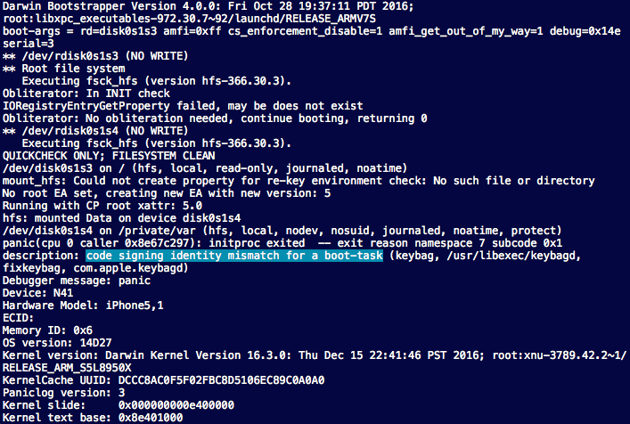
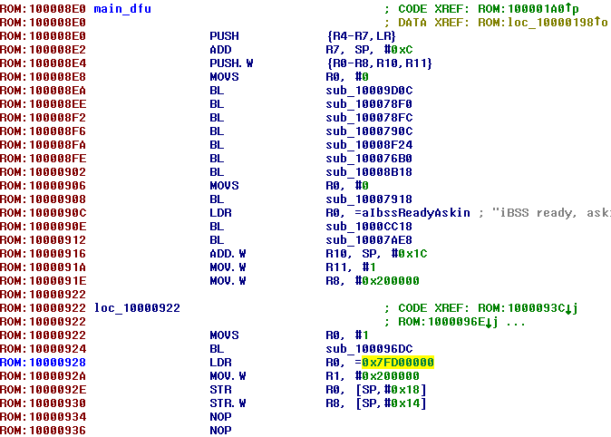
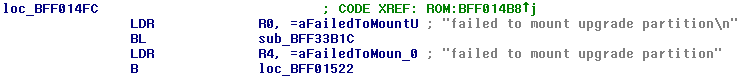
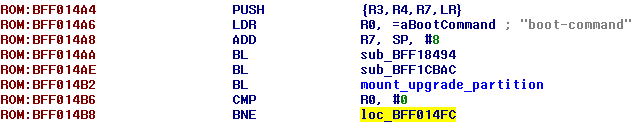
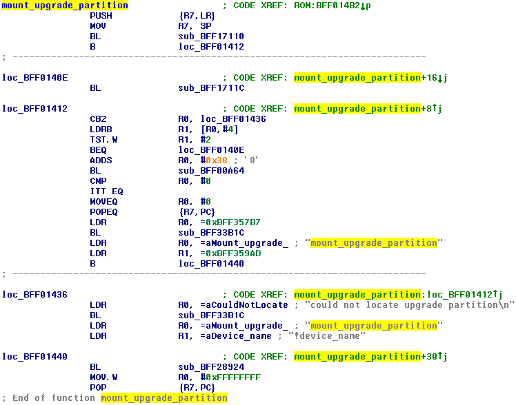
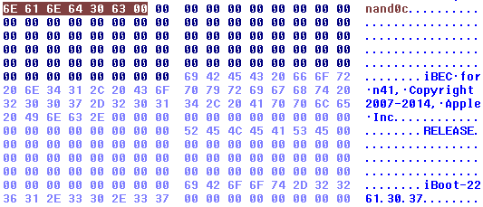
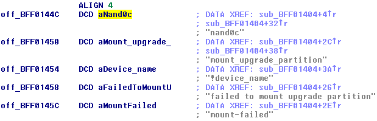
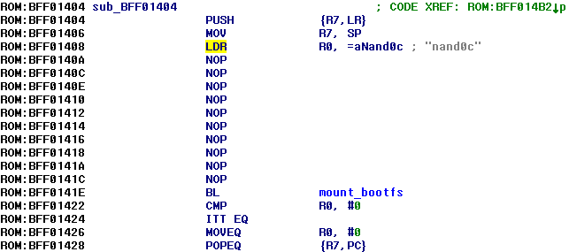

iOS 7+ dualboot
This article describes differences between dualbooting iOS 6 (main guide is about it) and newer Apple’ mobile OSes — iOS 7, 8, 9 and early versions of iOS 10 (up to 10.2.1, iOS 10.3.x is for sure possible to dualboot as well, but much harder. AMFI’ boot arguments are removed since then, therefore we’d have to patch a kernel itself). Please note I haven't tested these dualbooted systems muchPreparing RootFS
Absolutely same process as for iOS 6, with exception that iOS 10 root filesystem images are unencrypted by design and you don’t need to decrypt itPartitioning
Process is almost same as for iOS 6. But you mustn’t set 48th bit of attributes of fourth partition (Data for second system). It enables LwVM partition encryption, which we don’t want because since iOS 7 the kext now uses fixed fake key to decrypt a partition if no-effaceable-storage property was met in IODeviceTree:/defaults, instead of actual key from LwVM locker in Effaceable Storage:
49th bit doesn’t appear to do something important, so you can either set it or do not. I usually don’t
Modifying filesystems
Act as if you have iOS 9+ base OS even if you don’tFor iOS 9 and 10 it’s very important to remove /mnt2/mobile/Library/Preferences/.GlobalPreferences.plist:
rm -rf /mnt2/mobile/Library/Preferences/.GlobalPreferences.plist
On iOS 8 and older this file seems to be regenerated if it’s found not valid. On newer iOS on the other hand it is not. As a result system fails to set language and region, which leads to a lot of unexpected bugsAlso remove com.apple.ProxiedCrashCopier.plist:
rm -rf /mnt2/mobile/Library/Preferences/com.apple.ProxiedCrashCopier.plist
Freeing additional space
On iOS 6, 7 and 8 there’s about 150 MB of PreinstalledAssets at /private/var. When you move it from System to Data partition, we free that amount of space on System. There’s no such thing since iOS 9, so to free space we have to do another thing — remove OTA stuff (ramdisk, baseband firmware, boot logos, etc.)rm -rf /mnt1/usr/standalone/update
On iOS 9 freed space might be not enough, use smaller ramdisk (from iOS 6, for example) or patch iBEC in the way it will skip ramdisk loadingInstalling fixkeybag
launchd.conf isn’t a thing since iOS 7, so we need another trick to execute fixkeybag at first bootEasiest and universal method is to replace original keybag daemon (handles system keybags) by fixkeybag. Copy fixkeybag to /mnt1:
cp -a /usr/share/dualbootstuff/fixkeybag /mnt1
Back up original keybagd:mv /mnt1/usr/libexec/keybagd /mnt1/usr/libexec/keybagd_bak
Move fixkeybag to /mnt1/usr/libexec/keybagd:mv /mnt1/fixkeybag /mnt1/usr/libexec/keybagd
On iOS 10+ there's protection against replacing system launch daemons by something else:

It's done by comparing program identifier in codesigning blob with identifier in LaunchDaemon's property list. This protection is easy to fool. Rename our fake keybagd (which is fixkeybag actually) to original keybagd's identifier — com.apple.keybagd:
mv /mnt1/usr/libexec/keybagd /mnt1/usr/libexec/com.apple.keybagd
Run ldid against it:ldid -S /mnt1/usr/libexec/com.apple.keybagd
Now it'll have com.apple.keybagd identifier in its code signing blob. Rename it back:mv /mnt1/usr/libexec/com.apple.keybagd /mnt1/usr/libexec/keybagd
We’ll have to put keybagd on its rightful place after fixkeybag runs, of course
Installing baseband firmware
iOS 7+ don’t want baseband firmware inside ZIP archive, so the only thing we have to do is just copying:mkdir -p /mnt1/usr/local/standalone/firmware/Baseband/Mav5
cp -av /usr/local/standalone/firmware/Baseband/Mav5/* /mnt1/usr/local/standalone/firmware/Baseband/Mav5
Patching bootchain
iBSS
For iOS 7 process of patching is absolutely same. For iOS 8 and 9 too, but with tiny exception — load address is now loaded to register using LDR, instead of MOVT:
iOS 10 is a different story. LLB and iBSS is same thing now (iBoot and iBEC too), therefore it requires more or different patches. Just take on account that you can use older Stage 1 bootloader, it shouldn’t raise any issues
iBEC
For iOS 7 patching is same. But for iOS 8+ there’re 2 differences:- auto-boot=true patch isn’t a thing anymore, it’s no longer needed
- amfi_get_out_of_my_way=1 boot-arg should be added
- Previously iBoot found upgrade partition by its index in partition table (3rd). But now it’s done by searching for partition with special attribute it gets set if you call it Upgrade. For a first look problem can be easily solved by naming a partition so, but unfortunately first iOS will remove such partition on a next boot. That means we need to patch mount_upgrade_partition function in the way it will always mount third partition regardless what it’s called
mount_upgrade_partition patch
Find loc where failed to mount upgrade partition\n string reference is loaded to a register:
Find where the loc is called:

Previous branch with link points to mount_upgrade_partition function:

Next BL after ADDS R0, 0x38 points to mount_bootfs function, which takes string with name of the block device with a partition as its only argument. These block devices have names in format nand0X, where X is a character describing partition number starting from “a”. So block device for third partition would be nand0c. Obviously there’s no such string in iBEC, that means you have to create your own. Free areas around build tags and styles are good for that:

Replace some reference in the reference pool of the function by the reference to your new string: 
Then fill with NOPs area between MOV R7, SP and BL mount_bootfs and put LDR R0, =nand0c (LDR R0, [PC, space_between_pc_and_string_ref]) in this area:

iOS 10 notes
Since iOS 10 flashable iBoot and iBEC are the same thing (iBootStage2), it now has two modes — Remote boot (iBEC mode) and Local boot (iBoot mode). We need it to always run in Remote boot mode. @tihmstar's fork of iBoot32Patcher implements a patch with such purpose. My fork over @tihmstar's one allows you to choose which patches to apply. For iOS 10 iBootStage2 use it with the following options:iBoot32Patcher iBootStage2.decrypted iBootStage2.prepatched -r -d -x -b "rd=disk0s1s3 amfi=0xff cs_enforcement_disable=1 amfi_get_out_of_my_way=1 -v"
Apple logo patch is finally no longer needed. Apple fixed those routines herself
DeviceTree
Patching is same as for iOS 6. Please note that imagine doesn’t support iOS 9+ device trees, so you’d be unable to check your patchFirst boot
If you see AppleKeyStore: disabling use of effaceable storage, using fake key message and fixkeybag’s messages, then keybag has been generated and you can safely reboot to the first systemOn iOS 7 you won’t see fixkeybag’s log, but will see message about failed AppleKeyStore operation. No worries, it’s alright
From the first system you can now mount secondary OS’ root filesystem and put keybagd on its rightful place:
mount_hfs /dev/disk0s1s3 /mnt1
mv /mnt1/usr/libexec/keybagd_bak /mnt1/usr/libexec/keybagd
After that second iOS should boot with no issues!